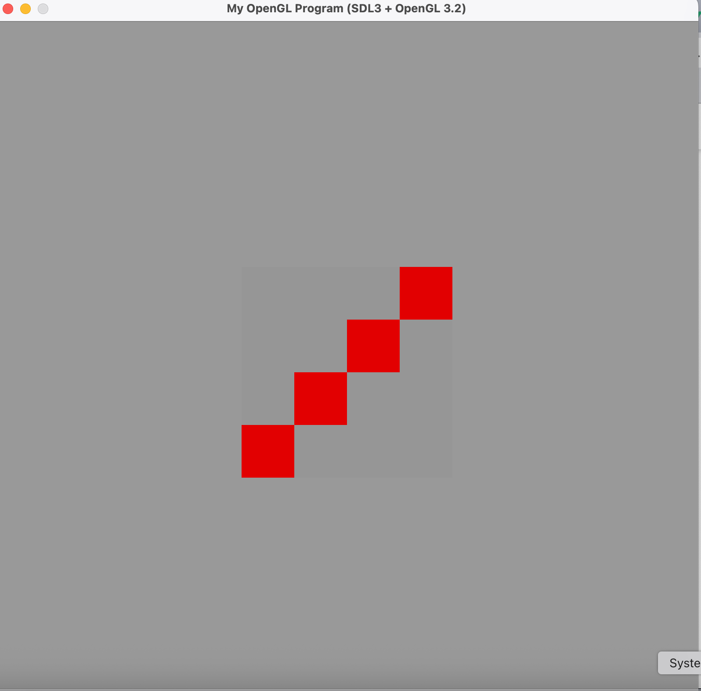
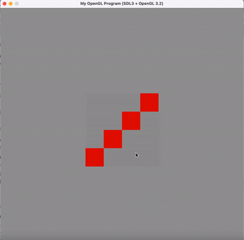
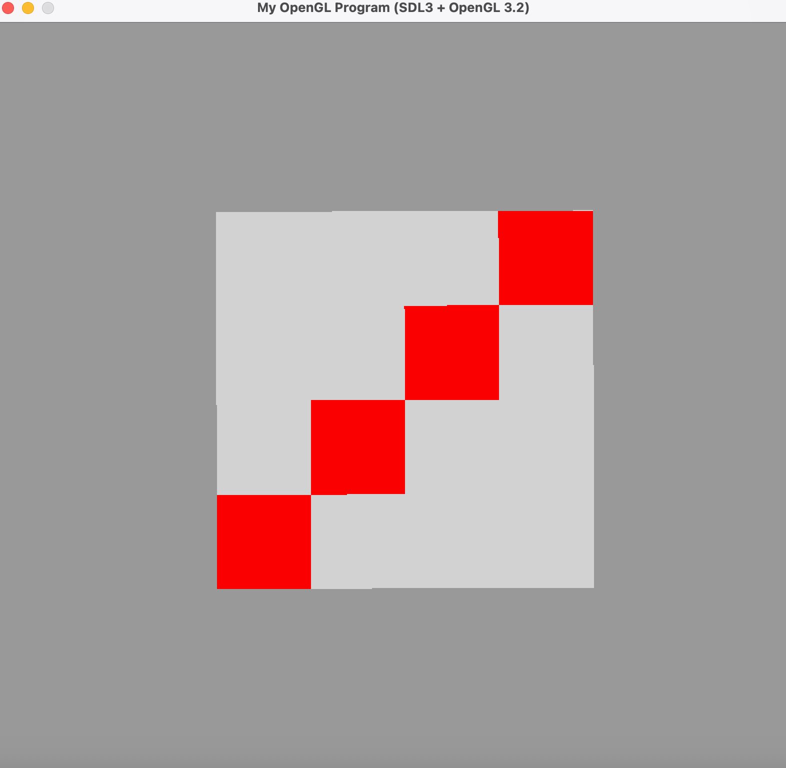
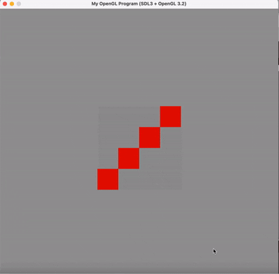
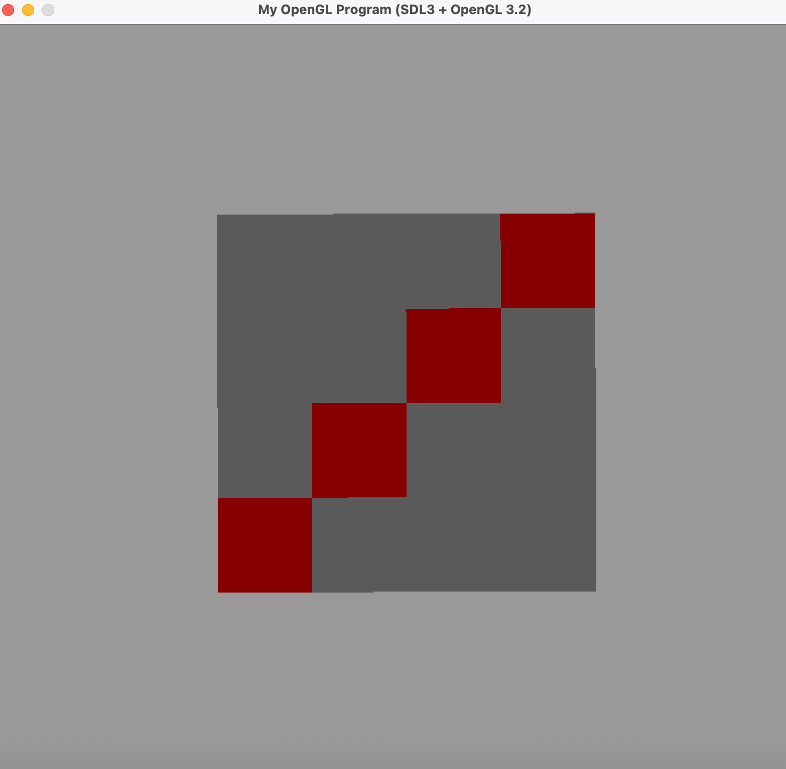
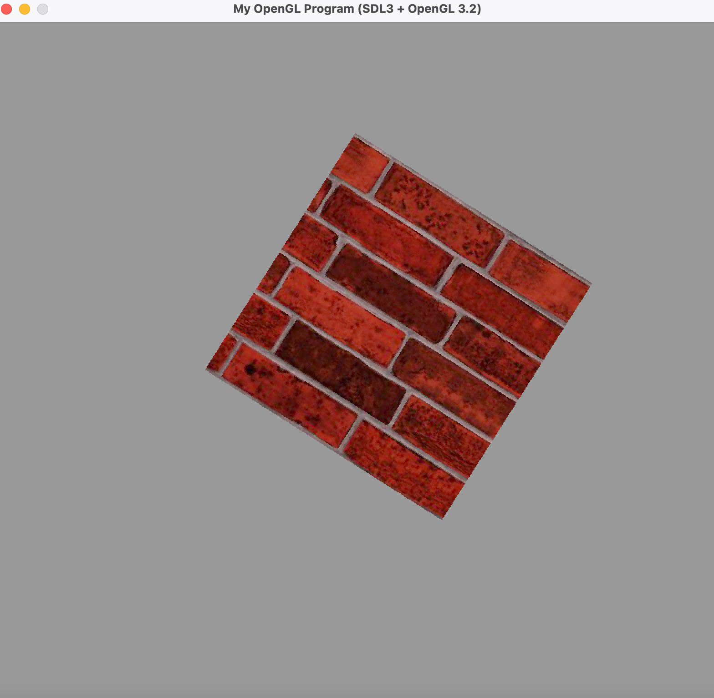
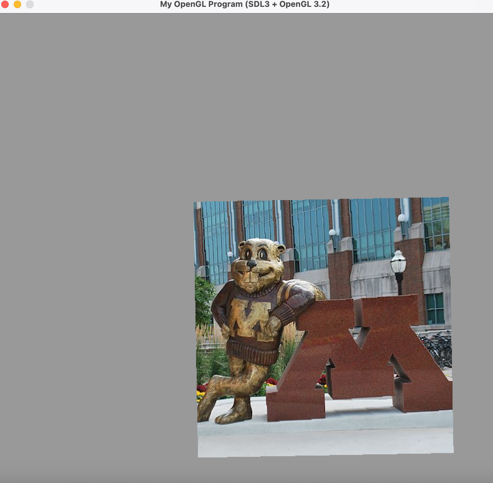

One feature that was relatively simple to add was the r_keyPressed() function, which resets the square image back to its original state. I found this feature easy to implement
because it only required resetting the values of rect_pos, rect_scale, and rect_angle. Since these variables were initialized at the beginning,
I simply reassigned their values to restore the square to its original state. A more challenging feature to implement was adjusting brightness using keyboard input. Initially, I had brightness changes occur in the
loadImage() function when the image was first loaded. However, I realized this approach was inefficient since I would have to reload the image every time the brightness
changed. To resolve this, I integrated the brightness adjustment directly into the OpenGL code, allowing me to update a brightness variable dynamically based on key presses. An online resource
and the provided code OpenGL helped guide this implementation. Overall, this project was made easier thanks to the Homework 1 assignment and the in-class slides. For example, determining when
to trigger translate, rotate, and scale based on mouse-click position was straightforward because I reused and adapted helper functions from HW1, modifying them
to work with squares instead of triangles. For instance, I set translate to true when pointInSquare() returned true, while pointSquareCornerDist()
and pointSquareEdgeDist() handled scale and rotate, respectively.